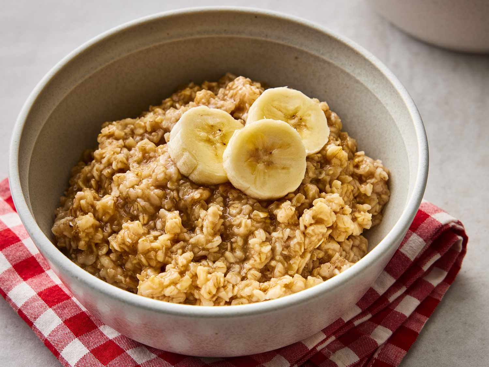

Description
A Heart healthy breakfast
Ingredients:
Start by measuring the oats and liquids. The ratio is 1:2. The usual serving size is ½ cup oats to 1 cup of water, milk or combination of both. I like combining ½ a cup of water and ½ a cup of milk for the best consistency. Then place in the microwave without a cover on it (we dont want any microwave accidents when the liquid boils). Microwave on high for 2 minutes and the consistency should be perfect.